Introduction
Prerequisites
- Create an account on github.com
- Choose "Free Plan".
- You will need to verify your email address.
- If you use a mobile device to verify your email address, you will also need to verify that mobile device.
- Download and install Git from:
- https://git-scm.com/download/win
- The default options are ok.
- Run "Git Bash" from Start Menu
Forking a repository
- Fork this repository: 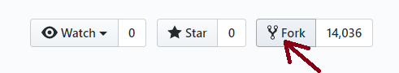

Creating a local clone
- git clone https://github.com/username/git-training.git 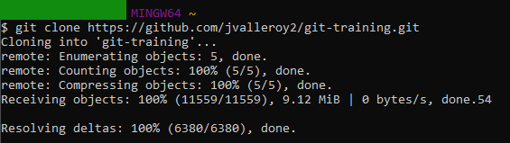
- cd git-training 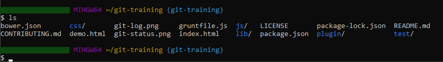
Changing a file
- Open index.html in text editor.
- Change the title of this presentation.
- Save the modified file.

Viewing status
- git status
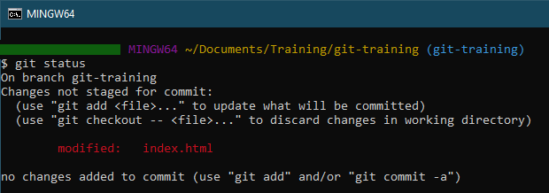
Viewing local differences
- git diff
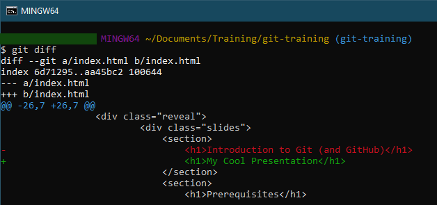
Staging a change
- git add index.html
- git status
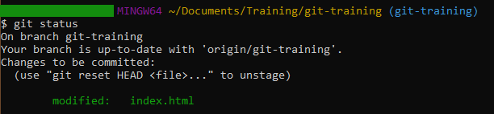
Viewing local staged differences
- git diff --staged
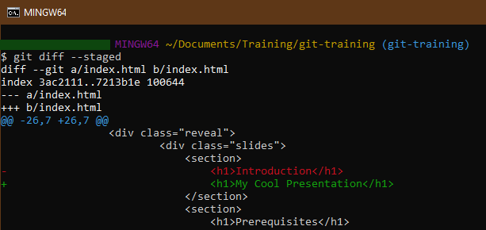
Committing a change
- git commit -m "Change slide text"
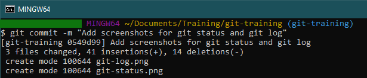
Viewing the log
- git log
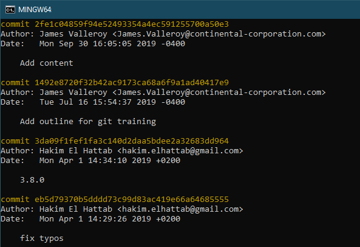
Viewing differences to remote
- git diff origin/git-training
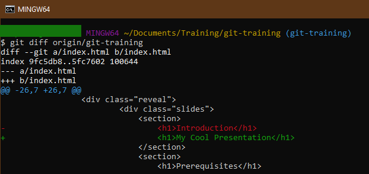
Pushing a change
- git push
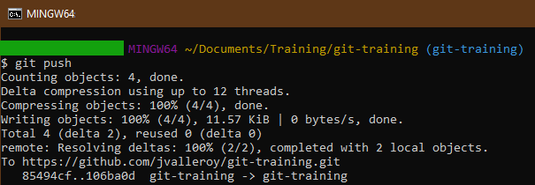
Creating a branch
- git checkout -b fix-spelling-errors
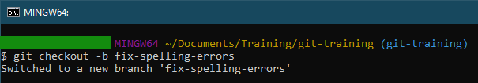
Pushing a branch
- git push origin fix-spelling-errors
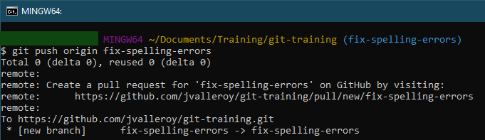
Creating a pull request on GitHub
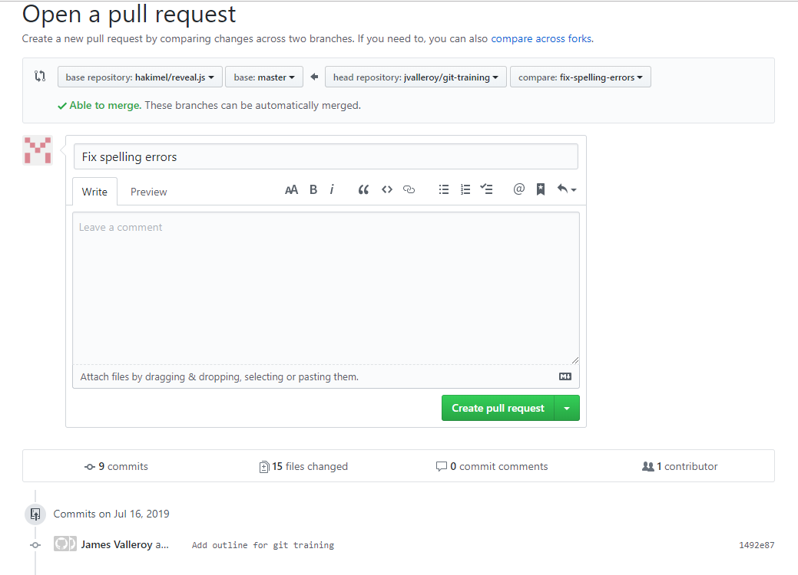Adding a remote repository
- git remote add upstream https://github.com/hakimel/reveal.js.git
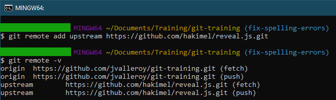
Fetching changes from a remote
- git fetch upstream
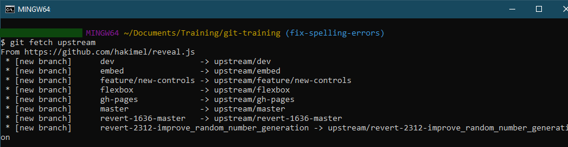
Pulling changes
- git pull origin git-training
Checking out a remote branch
- git checkout -b upstream-master upstream/master
Rebasing a branch
- git checkout git-training
- git rebase upstream-master
Merging a branch
- git merge upstream-master
Deleting a branch
- git branch -D fix-spelling-errors